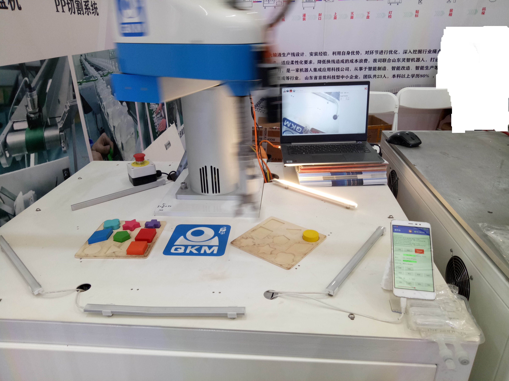

这个机器人是李群机器人最初的一代，这个SCARA是将控制器集成在底座中，相比其他工业机器人减小了很大体积。里面控制器还是用的美国Precise Automation公司。
编程语言是Visual Basic.NET 1,和现在的VB.NET有很多不同的地方，同时也由于采用的面向对象式编程，很多做工控或者传统机器人维保的人对此很反感，但是很适合当前毕业的新入这行的人。虽然原厂指令较少，但是可以自己扩展。 软件使用的是GDE，这个软件有30天试用期，不连接硬件机器人可以编写程序，没有本地仿真功能。下载可以上李群官网找找，或者去Precise Automation官网。 该控制器支持使用网页模式进行控制，所以节约了示教器的费用。同时李群开发了个手机端app，在小屏幕设备上操作更加方便。 展会案例：

关于编程，先上官方的pick_and_place程序,各位感受下：
Dim ii As Integer
Const gripper_on As Integer = 20001 ' Gripper DIO signal
Robot.Attached = 1 ' Get control of the robot
Signal.DIO(gripper_on) = False ' Turn off gripper
Move.Loc(safe_position, slow_and_stop)
For ii = 1 To 10
' Go get the part
Move.Approach(pickup_position,fast_motion)
Move.Loc(pickup_position, slow_and_stop)
Move.WaitForEOM ' Synch with robot motion
Signal.DIO(gripper_on) = True
' Go put the part down
Move.Approach(pickup_position,slow_and_go)
Move.Approach(placement_position,fast_motion)
Move.Loc(placement_position,slow_and_stop)
Move.WaitForEOM ' Synch with robot motion
Signal.DIO(gripper_on) = False
Move.Approach(placement_position,slow_and_go)
Next ii
Move.Loc(safe_position, slow_and_stop)